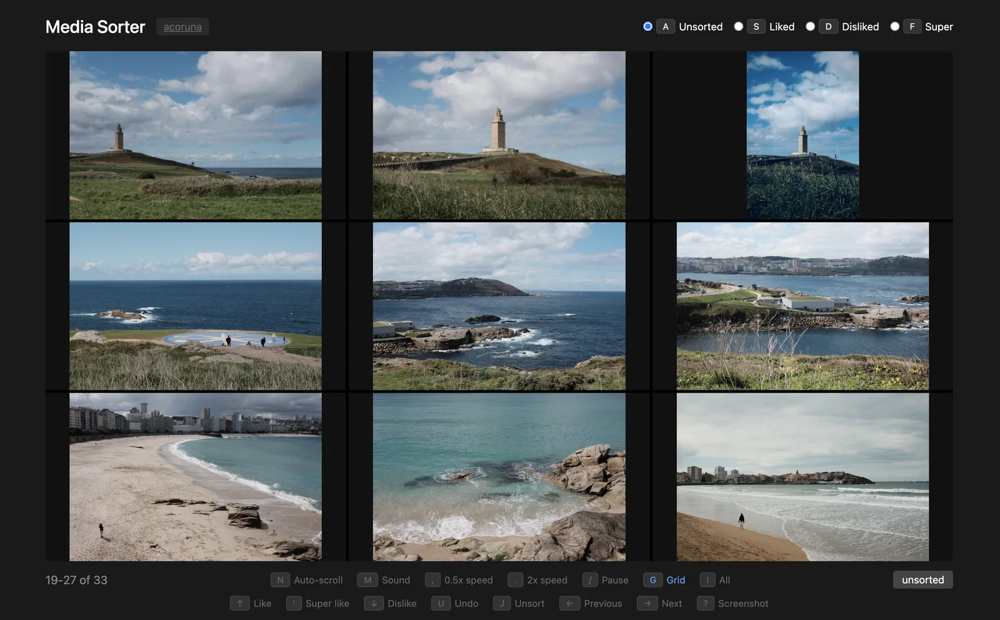

For macOS, or in desktop Chrome, Edge & Opera
Sort a folder of media with three keys.
Flip through your videos and images and send each one to liked, disliked, or super with a single keystroke. Everything stays in plain folders on your disk.
Apple Silicon .dmg · the browser version needs desktop Chrome, Edge, or Opera
Try it: press the keys or tap the buttons
Triage first. Refine later.
Point it at any folder. It creates three subfolders and gets out of the way.
-
Quick triage
Flip through everything and sort into three piles: liked, disliked, and super for the best stuff. Videos autoplay at 2x, and each keypress moves the file and jumps to the next unsorted one.
-
Refine later
Switch to a category and press 1–9 to break it down into numbered subfolders, however you want to group things. 0 moves a file back up.
-
No lock-in
There’s no library and no database, just folders. Move them around, back them up, or open them in any other tool.
my-trip/ ├── IMG_0412.jpg # still unsorted ├── liked/ │ ├── 1/ │ │ └── beach.mp4 │ └── 2/ │ └── lighthouse.jpg ├── super/ │ └── sunset.mov └── disliked/ └── blurry.jpg
Nine at a time
Press G for a 3×3 grid. Hover any tile and sort it right there, or click it to open it full size.

Small, fast, and careful with your files
Videos and images together
MP4, WebM, MOV, M4V, JPG, PNG, GIF, WebP, and BMP in one pass. Press I to show only one type.
Playback speed
Videos play at 2x by default. Switch to 1x or 0.5x, pause, or turn the sound on whenever you need to.
Auto-scroll
Press N and let it play hands-free. Images stay up for 6 seconds at normal speed, 3 at 2x.
Undo
U puts the last file back where it was, under its original name.
Never overwrites
If a file with the same name is already in the target folder, yours is saved as name (1).ext instead.
Frame grabs
? saves the current video frame as a PNG next to the video.
Re-sort anything
Like, dislike, and super work on any file, sorted or not, so you can change your mind later. J moves a file back to unsorted.
Stays on your computer
Files are read and moved locally through the browser’s File System Access API. Nothing is uploaded.
Keyboard shortcuts
Letter shortcuts also work on a Russian keyboard layout.
Sort
- ↑
- Like
- ↓
- Dislike
- '
- Super like
- J
- Move back to unsorted
- 1–9
- Move to a numbered subfolder
- 0
- Move back to the category folder
- U
- Undo
Browse
- ← →
- Previous / next
- A
- Show unsorted
- S
- Show liked
- D
- Show disliked
- F
- Show super
- I
- All / videos / images
- G
- 3×3 grid
Playback
- /
- Pause
- N
- Auto-scroll
- M
- Sound
- .
- 2x speed
- ,
- 0.5x speed
- ?
- Save video frame
Get Media Sorter
macOS app
Download the .dmg, open it, and drag Media Sorter to Applications.
macOS says it can’t open the app
The app isn’t notarized by Apple, so macOS blocks the first launch. Try to open it once, then go to System Settings → Privacy & Security and click Open Anyway. On macOS 14 and earlier, you can also right-click the app and choose Open.
In your browser
Nothing to install. Works in desktop Chrome, Edge, and Opera. Safari, Firefox, and mobile browsers don’t support the File System Access API.
Open in browserRun it locally instead
You’ll need Node.js:
git clone https://github.com/rsedykh/media-sorter
cd media-sorter
npm install
node server.jsThen open http://localhost:3000.